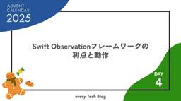
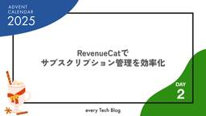
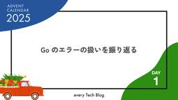

every Tech Blog
https://tech.every.tv/
株式会社エブリーのTech Blogです。
フィード

Swift Observationフレームワークの利点と動作
every Tech Blog
タイトル画像 Swift Observationフレームワークの利点と動作 この記事は every Tech Blog Advent Calendar 2025 の 3日目の記事です。 こんにちは、デリッシュキッチンでiOSエンジニアをしている谷口恭一です。 デリッシュキッチンのiOSでは現在、状態の変更通知の仕組みとして主にCombineを使用しています。最低互換のiOSバージョンをiOS16としているため、まだObservationフレームワークの導入はできていません。 しかし、おそらく来年にはiOS17+になると予想され、SwiftUIではObservationを使用したモダンな状態管理…
12時間前

RevenueCat でサブスクリプション管理を効率化
every Tech Blog
はじめに 導入背景 バックエンドで直面した課題 RevenueCat の魅力 Webhook によるイベント通知 ダッシュボード A/B テスト基盤がある 実際に使って感じたメリット 工夫した点 サブスクリプションの有効期限が切れているにも関わらずプレミアムステータスのままのユーザーがいればステータスを切り替えるバッチを作成 まとめ 参考 この記事は every Tech Blog Advent Calendar 2025 の 2 日目の記事です。 はじめに こんにちは、トモニテで開発を担当している吉田です。 今年 6 月末、弊社サービス「トモニテ」でサブスクリプションサービスのトモニテプレミ…
2日前

Go のエラーの扱いを振り返る 1
1
every Tech Blog
目次 はじめに Go でのエラー構造 再帰的エラーハンドリング エラーハンドリングのパターン errors.As で値取り出してチェック errors.Is で値の一致 Go1.26 で追加予定の errors.AsType まとめ この記事は every Tech Blog Advent Calendar 2025 の 1 日目の記事です。 はじめに こんにちは、開発本部開発 1 部トモニテグループのエンジニアの rymiyamoto です。アドベントカレンダートップバッターを務めさせていただきます！ 今回はまだ時期尚早ですが Go1.26 で errors.AsType が導入されることが…
3日前
いよいよ開幕！every Tech Blog Advent Calendar 2025
every Tech Blog
目次 はじめに every Tech Blog Advent Calendar 2025 の公開スケジュール 最後に はじめに こんにちは、開発本部開発 1 部トモニテグループのエンジニアの rymiyamoto です。 今年も残り 1 ヶ月ちょっととなり、年末の恒例イベント every Tech Blog Advent Calendar 2025 を開催します！ このカレンダーでは、エブリーのエンジニアが日々の学びや実践的な技術ノウハウを発信していきます。 技術的な工夫や挑戦の裏側など、幅広いテーマでお届けしますので、ぜひチェックしてください！ 過去のアドベントカレンダーはこちらからどうぞ！…
4日前

Grafana LGTMスタックをローカルで検証してみた
every Tech Blog
Grafana LGTMスタックをローカルで検証してみた はじめに こんにちは！デリッシュキッチンで主にバックエンドの開発を担当している秋山です。 オブザーバビリティの向上に向けてGrafanaやその関連ツールを検証する一環で、Grafana LGTMスタックをローカルに構築し実際に触ったので、そのあたりを紹介します。 オブザーバビリティについて 本題に入る前にオブザーバビリティについて簡単に説明できればと思います。 オブザーバビリティとは、システムの内部で起きていることを外部から把握する能力のことです。 日々のパフォーマンス確認/改善やエラー発生時の調査などに役立ちます。 システムの複雑性が…
9日前
小売店管理機能を実装した話
every Tech Blog
はじめに こんにちは！株式会社エブリーで約1か月間インターンシップに参加している山本です。配属チームはリテールハブ小売アプリチームで、主に小売店やそのお客さんに向けたサービスを開発しているチームになります。具体的には、スーパーなどの小売店がお客さんにお知らせをアプリ経由で配信するなどのサービスを手掛けています。本記事では、小売店向けのアプリの運用効率を向上させるために導入した管理機能と開発していく中で困ったことなどについてご紹介します。 背景と目的 現在、小売アプリにはお客さん向けアプリと小売店向けの管理画面の２つが存在します。小売店向けの管理画面では、お客さんに向けてお知らせやチラシなどを配…
11日前
Databricks Managed MCP ServerとUnity Catalog Functionでテーブルスキーマを取得する
every Tech Blog
はじめに こんにちは。 開発本部 開発1部 デリッシュリサーチチームでデータエンジニアをしている吉田です。 本記事では、DatabricksのManaged MCP Serverを活用し、CursorからUnity Catalog Functionsをツールとして呼び出して、任意のUnity Catalogテーブルのスキーマ情報を取得するまでをまとめます。 背景 CursorでDatabricks上のコードを書く際、特定テーブルのスキーマ情報をCursor側（エージェント）に渡したい場面がありました。 どのようにして簡単にこの情報を取得して渡すか検討していたところ、Databricks Man…
12日前
【ハンズオン】 MCP サーバー作成からリモートにホスティングしてみる
every Tech Blog
はじめに MCP サーバーとは ハンズオン step 1 step 2 step 3 最後に はじめに こんにちは、@きょーです！普段はデリッシュキッチン開発部のバックエンド中心で業務をしています。 このブログでは簡単な MCP サーバーを作成し、ローカルでの動作確認。そしてリモート化させるところまでをハンズオン形式で紹介しようと思います。すでに MCP サーバーを多数作成されていたり、豊富な知見をお持ちの方には物足りない内容になっているかもしれません。 MCP サーバーとは MCP サーバーは、AI アプリケーションと外部システムの間の橋渡しをする役割を担います。具体的には以下のような機能を…
16日前
Claude Code × Maestro MCPでFlutterのE2Eテストを実施してみた
every Tech Blog
はじめに こんにちは、リテールハブ開発部の杉森です。 近年、Playwright MCPを使ってブラウザ操作やテストを自然言語経由で実施している事例が多数見られるようになりました。その流れを見ていて、「これをFlutterアプリでも実現できないか？」と考えるようになりました。 調査を進める中で、Maestro MCPという選択肢があることを知り、実際にFlutterアプリのE2Eテストを試してみました。本記事では、その取り組みについて紹介します。 Maestroとは Maestro（マエストロ）は、モバイルアプリケーション向けのE2Eテスト自動化フレームワークです。iOS、Android、Re…
18日前
Go言語のガベージコレクションについて学んでみた
every Tech Blog
はじめに エブリーでデリッシュキッチンの開発をしている本丸です。 1ヶ月前にGo Conference 2025があり色々と面白い発表があったのですが、その中にGo言語のガベージコレクションについての発表がありました。 ガベージコレクションについてやGo言語におけるガベージコレクションの動作について、学習したことがなかったため自分の知識を整理するという意味を込めてまとめられればと思います。 本記事の多くはGoのガベージコレクションの公式ドキュメントを参考にしているので合わせて確認いただければと思います。 tip.golang.org ガベージコレクションの基礎 GCとは何か ガベージコレクショ…
24日前
Laravel開発環境にDev Containersを入れてみた
every Tech Blog
はじめに こんにちは、エブリーでサーバーサイドをメインに担当している清水です。 私のチームではPHP, Laravelを使用して小売店向けのSaaS側Webサービスの開発を行っています。 過去の記事でご紹介した通り、 私たちはモノレポの構成を採用しており、リポジトリの中身は大きく3つに分けることができます。 モバイルアプリ向け（mobile-api） 管理画面向けAPI (dashboard-api) 両APIで共通の部分(共通パッケージやGitHub Actionsの設定ファイルなど) 過去に本ブログで紹介されたDev Containersを私たちのチームでも導入検討を行いましたので、本記事…
25日前
Swift SDK for Androidを使ってiOSアプリのロジックをAndroidアプリで再利用する
every Tech Blog
はじめに デリッシュキッチンのiOSアプリを開発している成田です。 2025年10月24日にSwift SDK for Androidのプレビュー版がリリースされました(Announcing the Swift SDK for Android)。 📣Announcing the first preview releases of Swift for Android, enabling you to build Android business logic with the same Swift that you use for Apple platforms. https://t.co/UAR…
1ヶ月前
リテールハブ小売アプリのプレビュー機能を改善した話
every Tech Blog
はじめに はじめまして。2025年の8月から1ヶ月間、株式会社エブリーのインターンシップに参加していた山本陽右と申します。配属は、国内最大級のレシピ動画メディア「デリッシュキッチン」の知見を活かし、リテールメディアのプラットフォーマーを目指す「リテールハブ」事業部の「小売アプリ」開発です。今回、小売アプリの機能改善に取り組みました。 経緯 学部、大学院と建築学専攻である私がプログラミングに興味を持ったきっかけは、卒業論文でカビの成長モデルをJuliaで実装したことでした。それがきっかけで、建設業界だけでなくソフトウェア業界にも興味を持って就職活動していました。そこで縁あって未経験ながらエブリー…
1ヶ月前
MCP仕様の進化 — 2024-11-05 から 2025-11-25 まで
every Tech Blog
はじめに 開発本部でデリッシュキッチンのアプリウェブグロース向けの開発を担当しているhondです！ 9月末にMCPの最新仕様が2025/11/25にリリースされることが発表されました。この記事では2024-11-05から2025-03-26、2025-06-18、そして次期2025-11-25でどのような変更が行われてきたか主要な機能と私が特に興味を持った点について説明しようと思います。 先日Go公式のMCP SDKについて発表したスライドもあるので、興味のある方はぜひチェックしてください。 speakerdeck.com MCPとは MCP（Model Context Protocol）は、…
1ヶ月前
Go Conference 2025 のスポンサーブース運営に向けた準備の裏側
every Tech Blog
目次 はじめに 運営チームの設立 ブース内容の選定 作成物のラフ作成 アンケートボード フォトブースパネル デザイン依頼からの発注発送 デザイナーとの調整 発注発送周り 当日運営メンバーの募集と運営マニュアル 前日準備から当日 まとめ はじめに こんにちは、開発本部開発 1 部トモニテグループのエンジニアの rymiyamoto です。 先月は Go Conference 2025 が開催され、エブリーではスポンサーブースを出展させていただきました。 今回はそのブースの準備の話を綴っていきます gocon.jp 運営チームの設立 まず社内で運営に手伝ってくれるメンバーを募集し、私含め 4 名で…
1ヶ月前
SQLとLLMを用いた食トレンド予測
every Tech Blog
はじめに 1ヶ月間株式会社エブリーでデータサイエンティストとしてインターンをしている中村です。 私が配属された「デリッシュリサーチ」チームでは、デリッシュキッチンの膨大な検索ログデータを抽出・加工して、メーカー・小売の意思決定を支援しています。 本インターンでは、アプリ内の検索データから未来の「食トレンドワード」の予測に挑戦しました。 開発背景 食品業界では新商品の企画から販売までに時間がかかるため、企画の段階で「販売時期のトレンド」を正確に予測することがビジネスの成否を大きく左右します。 一般的に、トレンドが本格化するまでには、感度の高い層の検索行動などに「先行指標」が現れます。 そこで私た…
1ヶ月前
SwiftUIのBinding型の裏側 ~ PropertyWrapperとDynamicMemberLookup + KeyPath ~
every Tech Blog
はじめに こんにちは。デリッシュキッチン開発部でiOSエンジニアをしている谷口恭一です。 デリッシュキッチンでは新規画面のUI実装は主にSwiftUIを使用していて、@State、@Publishedなどを使って状態管理の仕組みを学びながら日々実践しています。 SwiftUIの状態管理に関連する言語機能は便利な機能ですが、使い方を誤ってコンパイルエラーになったときに全く意味がわからないというような状況になることがあります。 そこで、これらの言語仕様を調査してみようと考えました。特に@Bindingがどのように動作しているのかを調査したので、それを解説します。 目次 Bindingとは Prop…
2ヶ月前
仕様駆動開発ツールcc-sddを実務で使ってみた
every Tech Blog
はじめに こんにちは、開発1部でソフトウェアエンジニアをしている新谷です。 今回は、AIエージェントで仕様駆動開発を実現する国産ツール「cc-sdd」を実務で約1ヶ月使用してみたので紹介します。 cc-sddとは cc-sddは、仕様駆動開発をAIエージェントで実現する国産ツールです。 github.com 2025年10月10日時点では、以下のAIツールに対応しています。 Claude Code Cursor IDE Gemini CLI Qwen Code 本記事の事例では、Claude Codeを使用しています。 cc-sddは、3つのファイルを順次承認制で作成していく仕組みになっていま…
2ヶ月前
Google Ad Manager REST API と BigQuery の連携によるレポート自動化システムの構築
every Tech Blog
はじめに こんにちは、トモニテで開発を担当している吉田です。 デジタル広告の運用において、広告パフォーマンスの分析とレポート作成は重要な業務の一つです。しかし、弊社では手動でレポートを作成しており、営業活動に集中する時間を削ってしまう課題がありました。 本記事では、Google Ad Manager（GAM）の REST API と BigQuery を連携させ、レポート作成を自動化するシステムの構築事例について、紹介します。 背景：セールスレポート作成の課題 ビジネス課題 セールスチームが Google Ad Manager の広告レポートを手動で作成する際、以下の課題に直面していました。 …
2ヶ月前
インターンでデリッシュキッチンの新機能開発に取り組みました
every Tech Blog
1. はじめに こんにちは、everyで1ヶ月間のインターンシップに参加させていただいた宮田です。本記事では、デリッシュキッチンの新機能開発に携わった経験と、そこで得られた学びを紹介します。 現在、デリッシュキッチンの既存仕様に対して、ユーザー体験を向上させるための新しい機能開発を進めています。今回のタスクでは、ユーザーをグループ化する新機能のバックエンドAPI実装を担当しました。 2. プロジェクト全体像と技術スタック デリッシュキッチンサーバーの概要は下の図のようになっています。ダッシュボード側ではユーザー情報の管理・監視を行い、モバイルアプリ側ではデータベースからリモートキャッシュにセッ…
2ヶ月前
Goの組み込み関数 len() に詳しくなる
every Tech Blog
はじめに こんにちは。デリッシュキッチン開発部でバックエンドエンジニアをしている鈴木です。 Go言語の組み込み関数len()は、一見シンプルに配列やスライスなどの「長さ」を返す関数ですが、その実装はコンパイラやランタイムレベルで特別な扱いを受けています。本記事では、lenの言語仕様からコンパイラ内部の処理フロー、SSA最適化、最終的なアセンブリコード、さらにはruntime内部構造体に至るまでを網羅的に順を追って詳しく説明していきます。 lenの仕様と定数評価 まず、Go言語仕様においてlen(x)がどのように定義されているかを確認しましょう。lenは組み込み関数であり、以下のような様々な型に…
2ヶ月前
Amazon QuickSightでHighcharts Visualを使用して困ったこと
every Tech Blog
はじめに こんにちは、開発部でデータサイエンティストをしている蜜澤です。 現在Amazon QuickSightを使用して、データ分析ツールを作成しています。 Highcharts Visualを有効に活用できていませんでしたが、従来の折れ線グラフでは実現できなかった、数値によって小数点表示を変更することや、凡例をクリックすることでグラフの表示/非表示を切り替えることが可能になったので、分析ツールの利便性向上のために検証を行いました。 その際に少し困ったことがあったので、紹介させていただければと思います。 本記事の内容はかなりニッチな内容になっているため、QuickSightを日頃から使用して…
2ヶ月前
Cursor × iOS開発 ビルドエラーをCursorに取り込む編
every Tech Blog
はじめに こんにちは。開発部でiOSエンジニアをしている野口です。 以前にCursor✖️iOS開発の記事を書きまして、現在もCursorでiOS開発を続けているのですが、その記事では「ビルドエラーはXcodeで解消している」と記載していました。 実際に運用してみて、ビルドエラーが発生するたびにXcodeに切り替えて確認するのが少し手間に感じるようになってきました。そこで今回は、XcodeのビルドエラーをCursorに自動的に取り込んで、より快適にCursorで開発に集中できる環境を作ってみました。 この記事は上記の記事を前提にしている箇所がありますので、まだお読みでない方は先にそちらをご覧い…
2ヶ月前
AIレビューをきっかけにSQLBoilerの内部構造を調べた話
every Tech Blog
目次 はじめに SQLBoilerのコード生成フローをおさらい 調査のきっかけになったAIレビュー columnsWithoutDefault が示すもの 実際の挙動を確かめる まとめ — AIレビューとの付き合い方 はじめに こんにちは。開発本部開発1部デリッシュキッチンMS2に所属している惟高です。 私が現在関わっているプロジェクトでは、SQLBoiler という ORM を使って既存の MySQL スキーマから Go のモデルコードを自動生成しています。 普段は SQLBoiler が生成してくれるモデルを中身を覗かず「ブラックボックス」として使っていますが、ある日の AI コードレビュ…
2ヶ月前
Go Conference 2025 に Platinum "Go"ld スポンサーとして参加しました！
every Tech Blog
目次 はじめに セッション・ワークショップ紹介 今日から始めるpprof（ymotongpooさん） Goを使ってTDDを体験しよう！！(chihiroさん) Goで体感するMultipath TCP ― Go 1.24 時代の MPTCP Listener を理解する（Takeru Hayasakaさん） 0→1製品の毎週リリースを支えるGoパッケージ戦略——AI時代のPackage by Feature実践（OPTiM 上原さん） エブリーエンジニアのセッション エブリースポンサーブース ノベルティ アンケート フォトブース 各社スポンサーブース Resilireさん オプティムさん ナレ…
2ヶ月前
Cognito 標準機能のパスワードレス認証（Email OTP）を AWS CLI で試してみる
every Tech Blog
はじめに こんにちは。開発 2 部でリテールハブの小売アプリを担当している池です。 2024 年 11 月、AWS Cognito の認証機能にパスワードレス認証機能（Email/SMS OTP やパスキー）が標準機能として追加されました。 これまでは Cognito でパスワードレス認証を実現するにはカスタム Lambda トリガー（CUSTOM_AUTH 認証フロー）を利用して OTP 認証を実装する必要がありましたが、標準機能として追加されたことによって Lambda を使わずに Cognito のみで OTP を実現することができるようになりました。 小売アプリの開発においてパスワード…
2ヶ月前
【実践】Aurora DSQLをTerraformで構築して実運用化まで
every Tech Blog
【実践】Aurora DSQLをTerraformで構築。DSQLアーキテクチャの実運用に耐えるセキュリティのベストプラクティス
2ヶ月前
User-Agentだけに頼らないフロントエンドの端末判定の考え方
every Tech Blog
はじめに こんにちは、2025年4月にソフトウェアエンジニアとして新卒入社した黒高です。普段はデリッシュキッチンに関する開発に携わっています。 ウェブ版のデリッシュキッチンにおいて、クライアント端末の判定ロジックを見直す機会がありました。本記事では、「どのようにクライアントを識別し、どう補完していくと良さそうか」を整理します。 端末で処理を分けたいユースケース スマホとPCで表示を切り替える場面として真っ先に思い浮かぶのはレスポンシブレイアウトですが、これは多くの場合CSSで完結します。JavaScriptのwindow.innerWidthを用いることで画面幅を取得し、処理を分岐させるといっ…
2ヶ月前
持続可能なAIエージェント開発のためのアーキテクチャ設計について考える
every Tech Blog
はじめに こんにちは。デリッシュキッチンでデータサイエンティストをしている古濵です。 デリッシュAIを始め、約1年ほどAIエージェントの開発に取り組んできました。 今回は、個人的に感じたAIエージェント開発のアーキテクチャについて触れようと思います。 あくまで個人的意見という点にご留意ください。 背景 AIエージェントのようなシステムでも、明確な設計思想に基づいたアーキテクチャ選択が重要です。 しかし、AIエージェント開発における確立されたアーキテクチャパターンは、まだ十分に整理されていない状況です。 一般的にアーキテクチャを考える時、クリーンアーキテクチャ（レイヤードアーキテクチャ）などに代…
2ヶ月前
ヘルシカにウィジェットを新規追加した話
every Tech Blog
はじめに こんにちは！株式会社エブリーで1ヶ月間 iOS アプリエンジニアとしてインターンをしている白井です。この記事では、「ヘルシカ」というヘルスケアアプリ開発において取り組んだ、「ウィジェット機能」の実装についてお話ししたいと思います。 ヘルシカとは？ 本題に入る前に、今回開発に取り組んだ「ヘルシカ」とはどんなアプリでしょうか？ヘルシカとは、ダイエットや健康のために、ユーザーの食事や体重の記録を手助けするアプリです。 ヘルシカ - ダイエット＆健康のためのカロリー管理every, Inc.ヘルスケア／フィットネス無料「ヘルシカ - ダイエット＆健康のためのカロリー管理」をApp Stor…
2ヶ月前